Feature — Steve Saka
There is a cigar whose name has come up again and again in this series: Liga Privada No. 9 — the cigar that changed the landscape of the world's cigars with its fat Connecticut broadleaf wrapper. The man who made it is the protagonist of this feature: Steve Saka.
He was an executive who climbed from president of Drew Estate to its CEO, and at the same time a blender who assembled leaf with his own hands. Yet in 2013, at the very top, he left the company. He waited out a two-year non-compete in silence, then founded a small family company named after a New Hampshire town of some 3,000 people: Dunbarton Tobacco & Trust. It owns no factory of its own. Production is entrusted to other people's factories — among them Nicaragua's Joya de Nicaragua, the stage of Part 3 of this series.

His company carries one more anomaly. The industry's largest ratings magazine, Cigar Aficionado, does not score his cigars. And yet his lines sit at the very top of the aggregate rankings of multiple ratings magazines, year after year. In this feature we trace the road — from a young Navy sailor who became a pioneer of online media, served his apprenticeship at a retail giant, stood at the summit of Drew Estate and resigned, to the building of his no-compromise laboratory; we verify, from his own disclosures, the background of the “we will not score them” arrangement with CA; and we close by looking at where this small family company stands today, at home and abroad.
The facts in this feature are based on what could be corroborated through the specialist and trade press (Halfwheel, Cigar Aficionado, Cigar Coop, Cigar Dojo, Smoke Inn, official Smokingpipes articles), the brand's official site (Dunbarton Tobacco & Trust), and the principal's own statements, published letters and social-media disclosures. Anecdotes whose attribution varies with the teller — how Liga Privada and Undercrown were born — are presented with the principal's claims separated from third-party corroboration. Figures and birth years that could not be backed up were not used. U.S. prices are the published prices of the time.
◆ Chapter 1 — The Navy and the Dawn of the Internet: A Smoke in 1984
Steve Saka's life in cigars began in 1984. Cigar Aficionado records that he took up cigars while serving in the U.S. Navy. A sailor's pastime became a life's work.
He appeared on the industry's public stage at the dawn of the internet. In 1996 he became editor of CigarNexus, one of the earliest online cigar media outlets — of the generation that edited news and criticism on the web while cigar magazines were still made of paper. The maker's official biography calls him a “forefather” of the online-media field. Until 2000, he wrote about cigars prolifically.
His pen as a critic was known for pulling no punches. What was good was good; what was bad was bad. That frankness won him readers — and, later, it would also dig a deep rift between him and the publisher of the industry's largest ratings magazine. That story is taken up in the fact-check chapter.
◆ Chapter 2 — Under the King of Retail: Four Years at JR Cigar
In 2000, Saka put down the pen and moved to the business side. For four years he worked as an executive consultant under Lew Rothman, owner of JR Cigar, which had built a giant retail empire on mail order and catalog sales.
Those four years became the foundation of everything he did later. He learned not the logic of the maker but the logic of the sales floor and the buyer: which cigar sells, to whom, and why. He saw from the inside a world where a single line of catalog copy moves the numbers. A man who held both a blender's technique and a retailer's feel for reality was not common in the industry of that day.
◆ Chapter 3 — The Man Who Made Liga Privada: To the Summit of Drew Estate
In 2005, Saka became president of Drew Estate. The company, which had grown rapidly on infused (flavored) cigars, was a newcomer in the world of traditional premium cigars. The flagship he built there, and which continues to this day, is Liga Privada.
It began as something private. By his own account, the project started in the summer of 2005 as “a cigar for myself.” Saka, Jonathan Drew and Nicholas Melillo trialed more than 50 blends, and the base blend “#9” (its formal code: #9-A2X) became the final form. It was unveiled at the RTDA trade show in July 2006, and released commercially in 2007 in a single size — a 6×52 parejo, in 48-count cabinets. A stalk-cut Connecticut broadleaf wrapper, a Brazilian Mata Fina binder, and Nicaraguan and Honduran fillers. Its dense flavor opened the era of the broadleaf reappraisal.
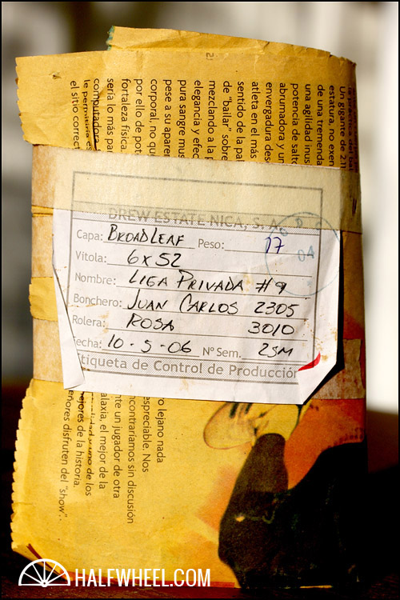

The roles of the three men who made No. 9 were clearly divided. Planning and the final call were Saka's. The founder was Jonathan Drew. And the man who carried the leaf and the factory was the third party, Nicholas Melillo. His work at first was leaf buying and supervision of fermentation; in time, as Director of Tobaccos & Production, he gripped the production operations of La Gran Fábrica — the implementer who turned prototypes into “a shape that can be rolled.” That Melillo left Drew in 2014. When Swisher acquired the company, he had his small shareholding bought out, and with that money he founded Foundation Cigar Company, entirely self-funded. El Güegüense and The Wise Man — his cigars, which carry the stories of history in their names — became regulars in Cigar Aficionado's annual Top 25. Another graduate, who walked a different road from Saka. His story is taken up in the next installment of this series.
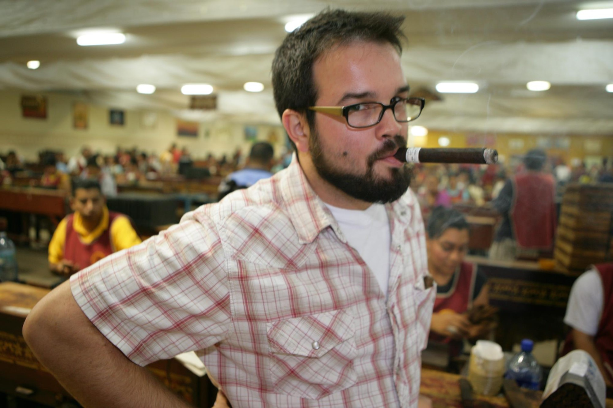

In 2009 came the sister work, T52, bearing a stalk-cut Connecticut Habano-seed wrapper; it was chosen as Cigar Coop's 2009 Cigar of the Year. And the 2011 Undercrown has one of the finest birth stories in the line. The factory's torcedores (rollers) loved Liga Privada so much that their own consumption grew, and the company asked them to hold back. The rollers then began making, for themselves, a blend of similar character — that, it is said, was the prototype. Saka and his team refined it into a product, shipped in September 2011. Saka's own positioning is vivid: Liga Privada is “for the king (the boss)”; Undercrown is “for the princes (the rollers).” The oddly shaped Flying Pig, incidentally, is said to derive from a shape Saka saw in an 1895 catalog.
 A box of Undercrown Maduro. The corner seal reading “NUESTROS PUROS (our cigars)” tells the story of its roller-born origin (photo: overseas retailer product photo)In mid-2012, Saka rose to CEO — seven years after becoming president. A man who had started as a critic stood at the top of one of America's largest cigar companies. But he would remain in that seat for only a brief time.
A box of Undercrown Maduro. The corner seal reading “NUESTROS PUROS (our cigars)” tells the story of its roller-born origin (photo: overseas retailer product photo)In mid-2012, Saka rose to CEO — seven years after becoming president. A man who had started as a critic stood at the top of one of America's largest cigar companies. But he would remain in that seat for only a brief time.
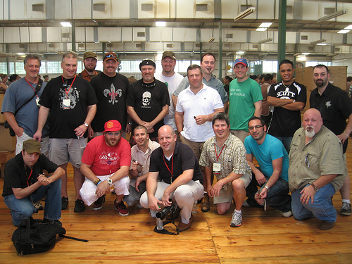
◆ Chapter 4 — Walking Away from the CEO's Chair: July 11, 2013
In 2013, Saka resigned from Drew Estate. His last day of work was July 11; the announcement came just before the IPCPR trade show. Both Halfwheel and Cigar Aficionado reported that the departure was amicable, and that the company bought back his holdings. He was not driven out, and it was not a falling-out. He stepped down of his own accord.

What bound him was a two-year non-compete. It expired on June 19, 2015. In the interval, he could make no cigars. In a letter published on the official site, he is said to have expressed his state of mind in words to the effect of “rather the head of a mouse than the tail of a lion.” Rather than an executive of a giant corporation, he wanted to be the master of his own kingdom, however small — the price of that choice was two years of silence.
Around Saka's resignation, a telling circulates: “Drew Estate was acquired by a major company, and he lost his place.” But the timeline does not fit. The company that acquired Drew Estate was Swisher, and that acquisition was in 2014. Saka's resignation was in 2013. The acquisition was an event that came after he had gone. He was not “driven out by an acquisition”; a man at the top stepped down by himself. Mistake this point, and the very subject of this feature collapses. Note also that fan sites that appear to be AI-generated carry false statements such as “he served 18 years as CEO” and “he resigned after the acquisition.” For figures, the rule is to go to the primary reporting.
In June 2015, as the two years of silence ended, Halfwheel reported the new company's name: Dunbarton Tobacco & Trust. Not the return of a king to the world of cigars, but the return of “the head of a mouse.”
◆ Chapter 5 — A “Trust Company” in a Town of Three Thousand: Sobremesa's Long Run-Up
The new company's home is the small town of Dunbarton, New Hampshire. Its population is some 3,000, and Saka lives there with his wife, Cindy, who is also a partner in the company. He explained the origin of the second half of the company name, “Trust,” to Cigar Insider, Cigar Aficionado's sister publication, as follows: for the head office, he had once nearly bought a bank building erected in the early twentieth century. The trace of a bank remained in a cigar company's name because of that episode.
The debut work is named Sobremesa. By his own definition, it is the lingering time after a meal when, instead of rising from the table, one stays to talk with family and friends, to drink and to smoke. America has no such culture itself, he says, so there is no apt English translation.
Into that one cigar he poured an abnormal amount of labor. The blend went through more than 27 revisions; the leaves trialed exceeded 40 varieties. The wrapper is a top-grade rosado of Ecuadorian Habano from the La Meca farm. The binder is a negro from Matacapan, Mexico. The fillers are five in kind — four Nicaraguan, with a Pennsylvania Lancaster County broadleaf ligero slipped in: the device of a critic-turned-blender, putting American leaf at the core. Manufacture is by Nicaragua's Joya de Nicaragua — the factory of the partner he had dealt with as an American buyer in the Drew days. Joya's Alejandro Martínez-Cuenca looks back on that time: “I first met Saka in 2007, when we were negotiating the draft of the U.S. distribution agreement. He was seated next to Jonathan Drew. He looked like a tough negotiator, and in fact he was exactly that!”

The presentation at the 2015 trade show was exceptional in every way. Out of concern for condition, no sampling by visitors. No formal orders taken. Instead, retailers were shown Liga Privada, and only their intent to buy was confirmed — the goods neither shown nor smoked, and still the retailers formed a line. Halfwheel recorded the scene as the visualization of the trust placed in Saka.
 The Sobremesa Cervantes Fino. Even in a debut work, the band's design was unified in a classical formalism (photo: Halfwheel)The first shipment came on November 6, 2015: six sizes at first, from $9.95 to $13.45. The first 1,000 boxes, it is said, reached 108 shops, while 126 shops remained on the waiting list. What the man brought back after two years of silence was not a flamboyant declaration of return, but a quiet, intricate cigar bearing the name of the lingering hour after a meal.
The Sobremesa Cervantes Fino. Even in a debut work, the band's design was unified in a classical formalism (photo: Halfwheel)The first shipment came on November 6, 2015: six sizes at first, from $9.95 to $13.45. The first 1,000 boxes, it is said, reached 108 shops, while 126 shops remained on the waiting list. What the man brought back after two years of silence was not a flamboyant declaration of return, but a quiet, intricate cigar bearing the name of the lingering hour after a meal.
◆ Chapter 6 — The No-Compromise Laboratory: The Lines of a Man Who Makes You Wait
The company's motto is “Puros Sin Compromiso (cigars without compromise).” The official site explains it as “our firmly held spirit, expressed in just three words.” The flagship line in which that motto appears most nakedly is Sin Compromiso.
Its name was known from a trademark filing as early as June 2015, when the company was founded. Yet shipment came in September 2018 — a full three and a half years. At the time, Saka himself declared publicly that he was “not at all ready,” and had only just begun buying leaf. The finished cigar's wrapper is a Mexican San Andrés Negro grown by “Cultivo Tonto (the foolish cultivation)” — a method inspired by Japanese fruit farmers, in which the lower leaves of the plant are dropped so that nutrients concentrate in the upper leaves. In the release he called it “the fruit of more than three years of experimental dark-leaf harvests in Mexico, Ecuador and Nicaragua.” The Selección No. 2 scored 92 at Halfwheel and ranked No. 9 in its 2018 Top 25; the line shipped in five sizes, from $15.95 to $18.45. The later addition Paladín de Saka has also recorded 91 points.

This line carries an episode that lights up his “no compromise” from behind. Of Intrepido, one of the five sizes, Saka himself disclosed the following in a PCA 2025 trade-show interview (Cigar Coop): having smoked, after some two years of aging since shipment, a cigar from the line, he found the targeted flavor had gone “dull.” So — telling no one — he quietly corrected the blend. Even a product that has already sold is not “finished” until his own tongue is satisfied. And that unannounced change, he disclosed from his own mouth, without hiding it. The weight of the words on the signboard dwells in places like this.
“No compromise” shows itself in the decision to stop, as well. The Nicaraguan puro Todos Las Dias halted production in mid-2021. The maker itself states the reason plainly on the official product page: the quality of a particular filler leaf had not reached the standard. When the fermenting current harvest is ready, it hopes to resume in the latter half of 2026. Since then the line has appeared only in the form of the Archive Series, which revives halted and discontinued items in limited runs; in 2026 the thick Double Wide returned, explicitly marked “LIMITED EDITION.” To stop a selling flagship over the condition of the leaf — that is the physical substance of his “no compromise.”
The laboratory's lines borrow other people's hands, too. The 2016 Mi Querida was made at the NACSA factory under the supervision of Raúl Disla, its factory-manager-class overseer, to Saka's instructions. The name translates literally as “my dearest,” but in Nicaragua the word is used to mean “secret mistress.” By way of the red-banded offshoot Triqui Traca, a black mistress was born as well. The mother body was a store exclusive made in 2021 for the 50th anniversary of the major retailer JR Cigar; the following year, 2022, it returned as SakaKhan (7.25×54), the first size of the limited line Mi Querida Black. SakaKhan was his nickname in the Navy days. In 2023 were added PapaSaka (5.63×48, limited to 3,500 boxes) and the $100 diademas, Unicorn. The experimental line Muestra de Saka is a showcase of “one size = one blend.” One of its works, Unstolen Valor, is an exotic piece in which Saka challenged Disla — “compete with your own blend” — and chose the best of the blends he produced; it, too, is made at NACSA. All ten works are in extremely small limited production, from the $100 Unicorn to the phantom lancero #NLMTHA and a new braided cigar (cuebra). And in 2025, within the limited Deep Cuts sampler — the “eleven cigars I usually smoke,” chosen by Saka himself — the new blend Word of Saka made its debut. Besides these, the laboratory's drawers keep multiplying: Polpetta, which puts cuttings to use; Red Meat Lovers, blended to accompany meat dishes; the heretical StillWell Star, which uses pipe leaf; and Umbagog, the capable bundle line.
Among those drawers, the most exotic is StillWell Star, which incorporates pipe leaf. The partner is Cornell & Diehl, the pipe-tobacco brand of the Laudisi group, which also holds the online retailer Smokingpipes. This line was born as a “co-development” between Dunbarton and that company. For Saka, it turns out, had also been a pipe smoker for decades. The origin was the TPE show in 2020. He confessed it to Smokingpipes' Shane Ireland (now the company's retail VP) and to Tim Vanderpool, then manager of Low Country, Laudisi's brick-and-mortar store. The two introduced him to the company's head blender, Jeremy Reeves. The pipe leaf used in the filler (Black Cavendish, Virginia, Burley, Latakia and the like) is made by Cornell & Diehl; the rolling is done at Joya's factory. The prototypes numbered 500. And on November 5, 2021, the cigar was pre-released only at Smokingpipes and the Low Country store — the first case of a Dunbarton national product launching exclusively through a single retailer. Dunbarton's launch release states explicitly that Cornell & Diehl is the supplier of the pipe leaf and receives no additional royalty from this line's sales. Not a licensing business of lending a name, but a collaboration of contributing leaf and craft — that is the true picture of this “boundary experiment.” Those four blends traced the basic genres of pipe tobacco — aromatic, English, Virginia-Perique and navy. The Virginia-Perique, a term the cigar world would not know, he renamed “Bayou” (his own explanation in the launch year). The line, which began with four blends in 2021, continues by way of annual limited Holiday editions, revised in 2026 into a reorganization of three blends.
“A stubborn man of cigars alone” — that was Saka's reputation. But in 2020, on the floor of the TPE show, he made an unexpected confession. His listeners were Smokingpipes' Shane Ireland and Low Country's Tim Vanderpool. “The truth is, I have been a hidden pipe smoker for decades.” A heavyweight of the cigar world was a pipe enthusiast as well. The two immediately introduced him to Cornell & Diehl's head blender, Jeremy Reeves. Thus began hundreds of pipe-leaf samples and days of repeated prototyping. On the launch day in November 2021, a ticketed launch event was held at the Low Country store, with Saka himself standing on the floor. The stubborn man's “other face” became the seed of a joint venture now five years running. The pipe tobaccos he regularly favors are Latakia-forward English blends — Peterson's “Nightcap,” Cornell & Diehl's “Pirate Kake” and “Bayou Morning”; the discontinued McClelland “Frog Morton” he is said to hunt down on the secondary market.
His pipe history itself reaches back to the same Navy days as his cigars. On a sailor's pay, cigars were expensive; for the price of one cigar, pipe tobacco bought him some eighteen bowls. Mixing his favorite pipe tobaccos into cigars and rolling a few dozen at a time for himself was a quiet pleasure of many years. Because it was “not on brand,” he never spoke of it in public (his own explanation, given in the launch year).
His nicknames in the industry are Sakasquatch, PapaSaka, and — from the people of Nicaragua — “El Gringo Gruñón (the grumpy gringo).” The Navy-era nickname SakaKhan also remains. A large frame, a white beard, and a way of speaking on social media that wears no veil. In 2023 the cigar media outlet Cigar Dojo chose him as its “Person of the Year,” and Dunbarton as its “Brand of the Year.” The man who had watched the industry as a critic was now chosen, by the industry, as its “face.”
Dunbarton's cigars do not appear in Cigar Aficionado's Top 25. This is not a “failure to place.” They are outside the scope of scoring. On December 19, 2025, Saka disclosed the background on his own Facebook. His relationship with the magazine's owner/publisher has been “less than cordial” since the mid-1990s. And when Dunbarton was founded, out of personal respect the two sides agreed that CA would not review or score Dunbarton's cigars — which is why they are not candidates for the Top 25 either, he explained. At the same time, he stated clearly that this is no criticism of the magazine's staff or editorial standards, and he sent that year's selections the naval congratulations “Bravo Zulu (well done).” It was a way of keeping a distance of thirty years between the man who wielded a critic's pen in the 1990s and the summit of the ratings magazines.
Not knowing this, one is tripped up by misinformation. A statement circulates on the web that “the Sobremesa Short Churchill was Cigar Aficionado's 2019 Cigar of the Year No. 1, at 97 points” — this is wrong. CA's 2019 No. 1 was the Aging Room Quattro Nicaragua Maestro, at 96 points; and Dunbarton is, in the first place, outside the magazine's scoring scope. The yardstick to look at instead is the aggregate ranking of multiple magazines (The Consensus). Dunbarton officially proclaims itself “the only company whose every core Liga has finished in the Top 5 of The Consensus Top 25 for nine consecutive years, taking No. 1 three times,” and “Company of the Year in Halfwheel's Consensus in six of the past seven years” (presented here, as the company's own declarations, with that status noted). The cigars of the man who is not scored remain at the summit of the aggregate. That paradox is his present position.
◆ Chapter 7 — A Triple Connection with Joya: The Negotiating Partner Became the Maker, and Then the One Who Delivers
Saka's relationship with Joya de Nicaragua is twisted three times over. The first connection was in 2007: as president of Drew Estate, he sat at the negotiating table over Joya's U.S. distribution. The second connection is that distribution itself. On April 25, 2008, Drew Estate took over Joya's U.S. distribution (before that, SAG had handled it). In other words, Saka was also the man responsible for selling Joya's cigars in America.
The third connection is Dunbarton. To the factory that had sat across the negotiating table, he now entrusts the manufacture of his own cigars. Sobremesa, Sin Compromiso and Todos Las Dias were all born at Joya's factory. And in 2025 the stage moved once more. It was announced that September that Joya's U.S. distribution would leave Drew Estate, and from January 1, 2026, it is to be carried by SAG Imports, resurrected as a joint venture of the Martínez family and the Quesada family. Drew and Joya have had their “distribution divorce.” But Saka's production remains at Joya.
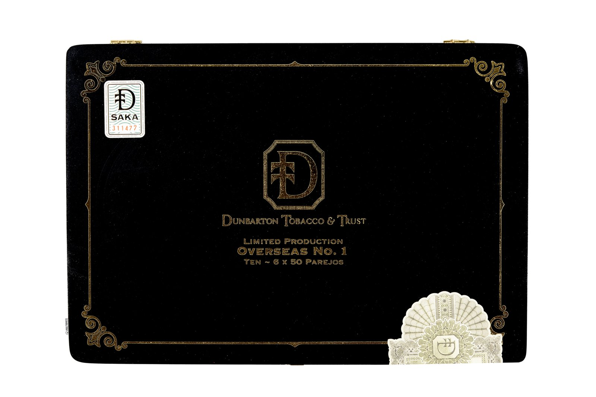
Its symbol is the Overseas No. 1, released in January 2025 — Dunbarton's first line made exclusively for international markets, with Joya handling both manufacture and distribution outside the U.S. A 6×50 toro with an Ecuadorian Habano wrapper; Halfwheel's rating was 88 points. At home in America he can issue small-lot experiments one after another, yet cannot deliver them to the fans abroad — out of that frustration, Saka explains, this brand for outside the U.S. was born. The partner who once faced him across the negotiating table became the maker, and then the one who delivers. The triple connection has not come undone.
◆ Home Ground — A Town of Three Thousand, and the Line the Home Market Cannot Buy
Finally, the geography of this brand. Its home ground is the small town of Dunbarton, New Hampshire — some 3,000 people — where Saka lives with his wife Cindy, a partner in the company. The company owns no factory; its cigars are rolled in Nicaragua, at Joya de Nicaragua and NACSA. At home in the United States, Dunbarton is an established presence of an unusual kind: Cigar Aficionado does not score its cigars, yet its lines hold the top places of the aggregate rankings year after year — by the company's own account, every core line has finished in the Top 5 of The Consensus Top 25 for nine consecutive years. A family company with no factory, headquartered in a town of three thousand, whose name is known wherever premium cigars are smoked.
Abroad, the picture carries a reversal. For years the frustration stood that the small-lot experiments could be issued one after another for the home market, but could not be delivered to the fans overseas. The answer, in January 2025, was the Overseas No. 1 — the first line made exclusively for international markets, manufactured and distributed outside the United States by Joya de Nicaragua, and not sold at home at all (Halfwheel, 88 points). The partner of the triple connection of Chapter 7 now carries the brand beyond its home market, and the envy runs the other way: it is the American fan who cannot buy it.
◆ Chapter 8 — The Lineage: A Map of Two Companies
| Line (debut) | Made by | Wrapper | Notes / ratings |
|---|---|---|---|
| Liga Privada No. 9 (2007) | Drew Estate | Connecticut broadleaf | Saka's breakthrough work “A cigar for myself” changed the world |
| Liga Privada T52 (2009) 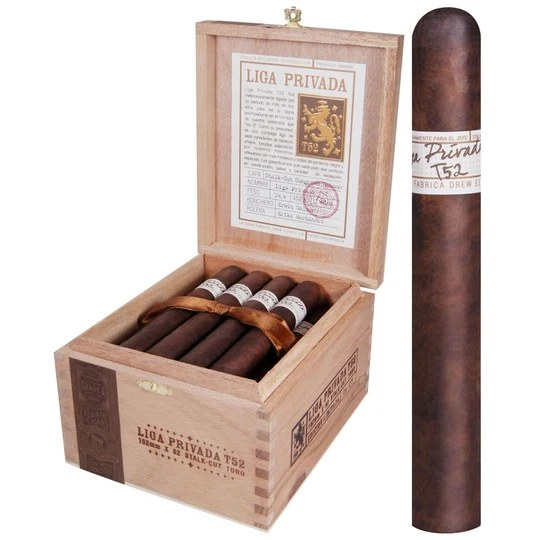 | Drew Estate | Connecticut Habano | Cigar Coop's 2009 Cigar of the Year |
| Undercrown (2011) | Drew Estate | Mexican San Andrés | Began as the rollers' own blend The cigar “for the princes” |
| Sobremesa Solita (formerly Sobremesa, 2015) | Joya de Nicaragua | Ecuadorian Habano rosado | Dunbarton's debut work: 27+ blend revisions, 40+ leaves trialed Renamed to the current name in 2023. Sister line Brûlée; offshoot Solita Red (2025); new line Tapa Negra (2026). Tapa Negra's double-wrapper technique descends from a method Saka encountered in his JR Cigar days on the house brand La Escepción, later passed to the Joya partners, who used it to create Cabinetta (his own account) |
Mi Querida (2016) | NACSA | Connecticut broadleaf | “The secret mistress.” A red-banded offshoot, Triqui Traca, followed |
| Mi Querida Black (2021) 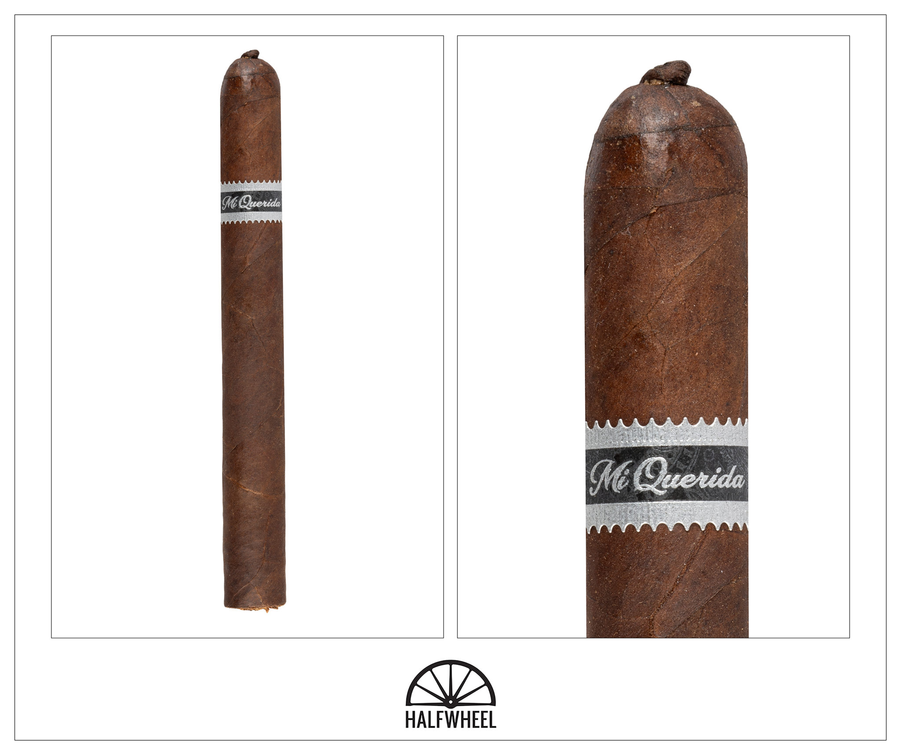 | NACSA | Connecticut broadleaf No. 1 Dark | The limited-production “black mistress.” Originated as a store exclusive for JR Cigar's 50th anniversary SakaKhan (7.25×54, his Navy nickname) / PapaSaka (limited to 3,500 boxes) / Unicorn ($100) |
Todos Las Dias | Joya de Nicaragua | Nicaraguan (puro) | On hiatus since 2021 over leaf quality Limited revivals via the Archive Series (Double Wide 2026 explicitly marked LIMITED EDITION) |
| Sin Compromiso (2018) | Joya de Nicaragua | Mexican San Andrés Negro | Roughly three and a half years from announcement to shipment No. 2 scored 92 at Halfwheel, No. 9 in its 2018 Top 25 In 2025 the new blend Word of Saka debuted in the limited Deep Cuts Sampler — exceptionally for this line, made at NACSA (per his later statement; Nicaragua's new rules required every brand to be registered at both factories) |
| Umbagog 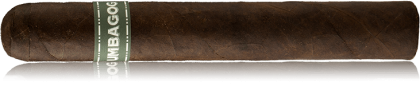 | NACSA | Connecticut broadleaf | The capable bundle line Named for a New Hampshire lake. The Bronzeback offshoot (2024) shares the original's filler and binder — only the wrapper differs: a 2LS grade that is usually steamed for mass-market bundles, here left naturally fermented (his own explanation) |
Muestra de Saka | Joya de Nicaragua / NACSA | Varies by blend | The experimental line of one size = one blend; all ten works in limited production First work Exclusivo (2017) / Unicorn ($100) / #NLMTHA / Unstolen Valor is Disla's blend New for 2026: the first cuebra, Lengua de Suegra, and Chubby Unicorn, given free to favored accounts rather than wholesaled (the same blend as the Unicorn, in a simplified shape — his own explanation) The previous year's Unicorn, whose production displeased him, was discarded in full and remade. The Muestra blends Alpha/Omega are included in the Cosmic Corona corona sampler (7 blends × 2, all 5×44, $211.30, shipped November 9, 2026). He is also considering retiring one of the works (as of August 2026; undecided) |
StillWell Star | Joya de Nicaragua | Pipe leaf | Co-developed with Cornell & Diehl, the pipe-tobacco brand of the Laudisi group A boundary experiment between cigar leaf and pipe leaf 2026 revision: the original four blends retired, reorganized into three new sweet-capped blends in two sizes; an annual Holiday series as well |
| Red Meat Lovers 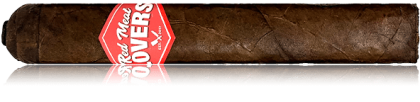 | ― | ― | A line made to pair with steak. It began as a store exclusive for the retailer Smoke Inn and became a nationwide brand in 2023 (his own account) By his own assessment, the mildest and creamiest of his regular-production cigars (only the Beef Stick is blended stronger) |
| Polpetta 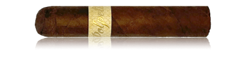 | ― | ― | A “Cuban sandwich” style cigar using short-filler cuttings Named for the Italian meatball |
#GFY Lancero Collection (2024) | Joya de Nicaragua | Six wrappers | A limited set of ten 7×38 lanceros (4,150 boxes) Re-includes Muestra's #NLMTHA, and the company's first candela leaf. That #NLMTHA took 63 trial blends to complete (his long-form post) |
Overseas No. 1 (2025) | Joya de Nicaragua | Ecuadorian Habano | The first international-market-only line; not sold in the United States Halfwheel 88 points |
| Year of the Duque (2025) 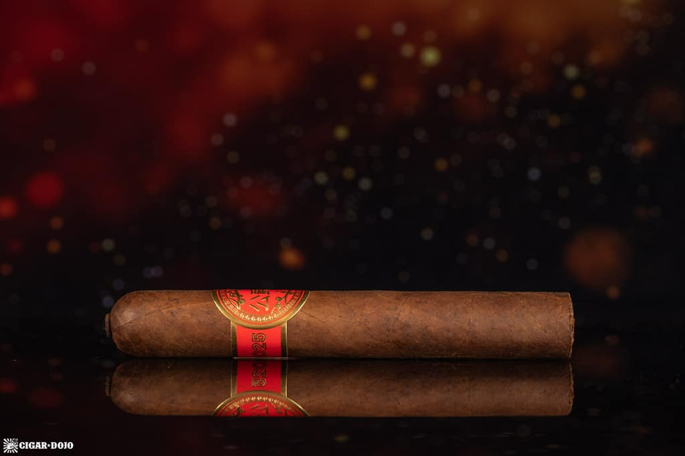 | Joya de Nicaragua | Ecuadorian Habano rosado | The first of an annual limited series honoring not a zodiac animal but a person Honors Chris Duque of Honolulu, a former police officer and longtime fan who volunteers at trade shows. 2,000 boxes; Halfwheel 91 points |
| LecheBurra (2025) 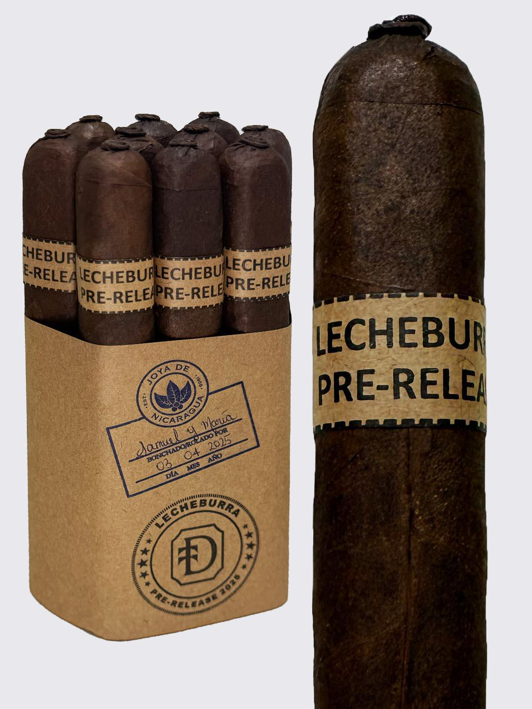 | ― | San Andrés Negro (Cultivo Tonto) | A collaboration sold exclusively by the online retailer Cigars Daily Pre-released November 2025 (Toro 6×52, about $19); full release in 2026. The binder is Brazilian Mata Fina |
10th Jubilee (2026) | NACSA | Ecuadorian Sumatra | The tenth-anniversary release. Halfwheel 91 points |
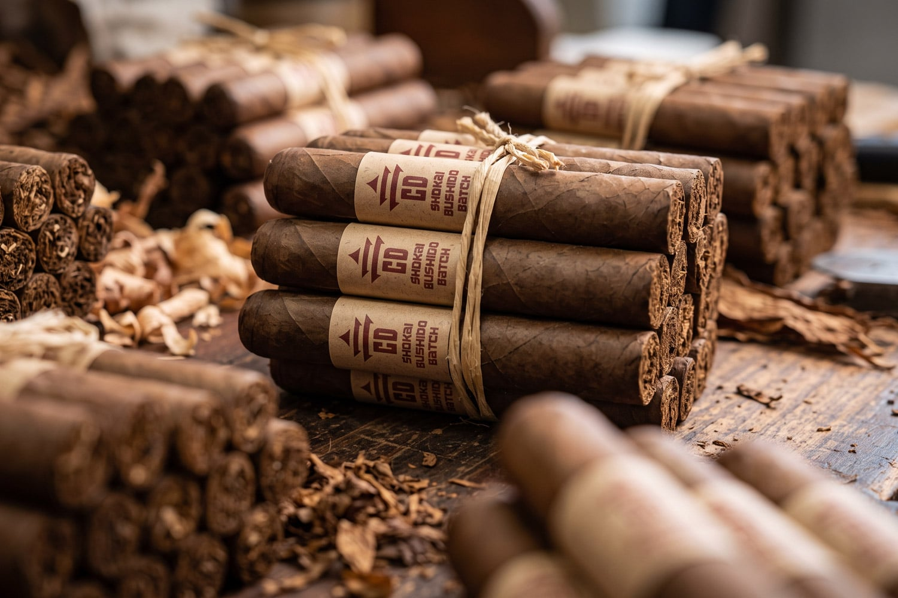
And the laboratory's next doors are beginning to come into view. For some three years Saka has been exploring new uses for Ecuadorian Sumatra leaf. The attempt runs in a lineage from Fiddlehead, the annual limited made for member shops of the Cigar Association of New Hampshire (CANH), through the tenth-anniversary 10th Jubilee, to the new line in development, Takumi. Takumi is expected to be an extremely small lot, and his hints suggest it may be shown at PCA in March 2027 (this is not confirmed). As for Fiddlehead, his social-media posts report that its proceeds go to the association's fund for regulatory and tax measures, and that the annual drop is expected to make 2026 its final year (our editorial office has not been able to confirm this).
In the course of that development, a blend was born that was “not what was aimed at, but tremendously delicious.” That is Shokai Bushido — the name, in Saka's own rendering, means “an introduction to the way of the warrior.” Made in collaboration with the cigar media outlet Cigar Dojo, it debuted as a one-time drop sold exclusively by the Phoenix retailer Cigars Daily, at an event on November 14, 2026. Whether it will be produced again is undecided, and neither size nor price has been published (this site also reported it at the time of the announcement). A limited piece bearing a Japanese word in its name, born quietly in a corner of America — the drawers of his laboratory are still multiplying.
◆ Conclusion — Where the Unscored Man Stands Now
The Navy sailor became an internet critic, learned at the retail floor, stood at the top of a large company, and stepped down by himself. What he built after two years of silence was a small family company with no factory of its own. Its flagship made the world wait three and a half years; a selling line is stopped over the quality of a single leaf; with the largest ratings magazine he keeps a pact of “we will not score them.” In 2025 he refused to register his products under California's new regulations, declaring himself that in that state his own products would become illegal goods. “I choose to abide by my principles over commercial concerns” — his own words. And still his cigars remain at the summit of the aggregate rankings, and abroad a line that American fans cannot buy sits on the shelves.
“Rather the head of a mouse than the tail of a lion.” Ten years on, his present figure proves the meaning of those words. Not by the size of the kingdom, but by the breadth of the range in which he does not compromise, he has defended his own country.
In fact, one more vertical thread runs through this feature. Laudisi Enterprises — which holds Cornell & Diehl, StillWell Star's collaboration partner — acquired Caldwell Cigar Co. and Lost & Found in March 2024, and the founder, Robert Caldwell, remained as a shareholder and vice president. Shane Ireland, who connected Saka to Cornell & Diehl, had — according to Smokingpipes' official history — been on all-night talking terms with Robert and his partners long before the acquisition. Saka, bound by collaboration and personal ties alone, with no capital tie; and Caldwell, taken whole into the group. Two men in the same circle, standing in exactly opposite places. As for the story of the boy who, at twelve, was taken to Carrillo's factory and, smoking an extra-thick cigar to the end, fell in love with cigars — that we will take up in its own installment, once the answers to our interview are in hand.
Finally, one bridge to the next installment: the other graduate, touched on in Chapter 3. Nicholas Melillo, who left Drew in 2014, a year after Saka. The implementer who, in No. 9's shadow, gripped the leaf and the factory founded Foundation Cigar Company entirely self-funded, with the money from the buyout of his shareholding at the acquisition. In contrast to Saka, who made a “we will not score them” pact with the largest ratings magazine, his cigars are regulars in that magazine's annual Top 25. The starting point of his career was a single email from Jonathan Drew — an invitation to become his right hand in Nicaragua — that reached him in the middle of a journey around the world. And one of its arrival points was his investiture in 2022 as a Knight Commander of the Ethiopian Star of Honor, the order founded by Emperor Menelik II in 1889: the man who kept making cigars carry the names of history had his own name entered into history itself. — The next installment is that man's story.